Q15 · Word AND Structure Knowledge · p98
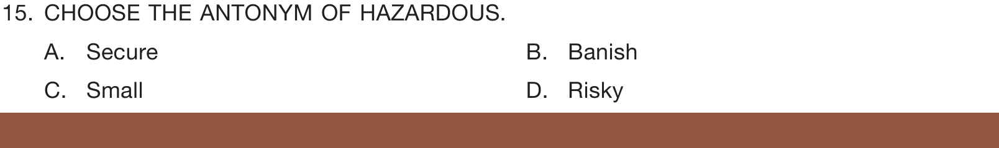
CHOOSE THE ANTONYM OF HAZARDOUS.

A
Secure
B
Banish
C
Small
D
Risky
Answer A
‘Secure’ is the antonym of ‘Hazardous’. The word ‘secure’ means ‘safe’ and ‘hazardous’ means ‘risky’ or ‘dangerous’.
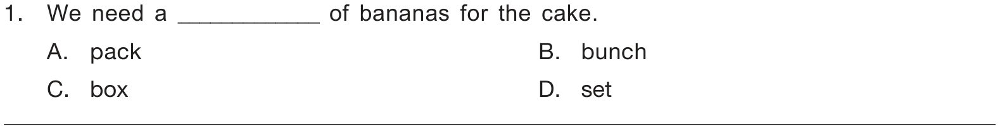
We need a _____________ of bananas for the cake.
pack
bunch
box
set
‘Bunch’, is the correct option to name the group of bananas.
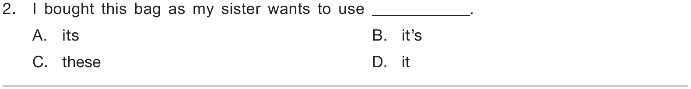
I bought this bag as my sister wants to use _____________.
its
it’s
these
it
‘It’, pronoun is used in place of a thing in a sentence.
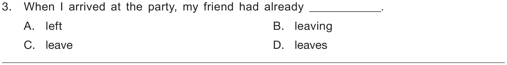
When I arrived at the party, my friend had already _____________.
left
leaving
leave
leaves
The given sentence in question is in past tense and ‘left’ is the past form of verb ‘leave’.
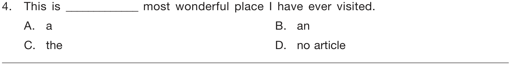
This is _____________ most wonderful place I have ever visited.
a
an
the
no article
Most wonderful is the superlative degree of adjective in the given question. We use article ‘the’ before superlative degrees.
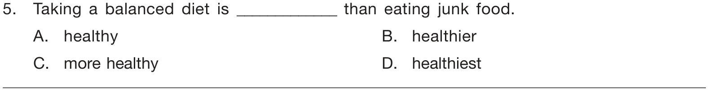
Taking a balanced diet is _____________ than eating junk food.
healthy
healthier
more healthy
healthiest
We use comparative degree of adjective in a sentence when there is a comparison between two things.
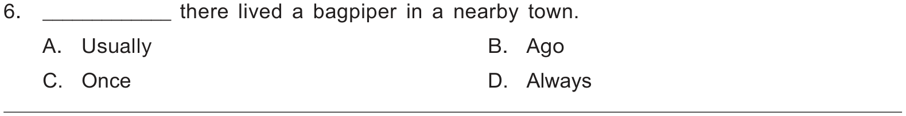
_____________ there lived a bagpiper in a nearby town.
Usually
Ago
Once
Always
We use adverb ‘once’ to show a time in the past.
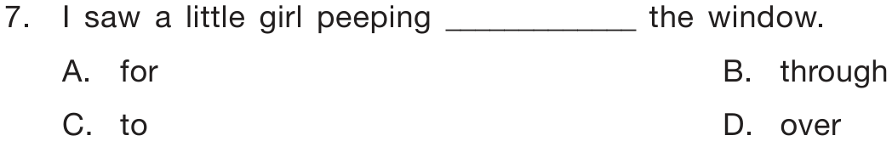
I saw a little girl peeping _____________ the window.
for
through
to
over
‘Through’ (preposition) is used in a sentence to indicate ‘from one side to the other’.
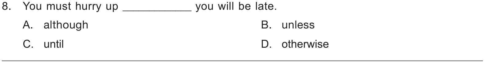
You must hurry up _____________ you will be late.
although
unless
until
otherwise
‘Otherwise’, (the conjunction) is used for saying that if one thing doesn’t happen, something else (usually bad) will happen.
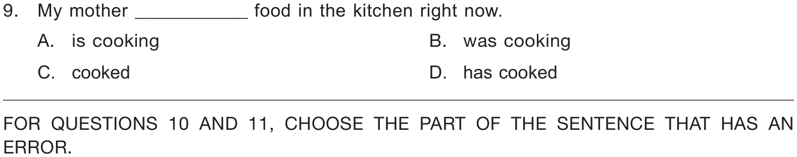
My mother _____________ food in the kitchen right now.
is cooking
was cooking
cooked
FOR QUESTIONS 10 AND 11, CHOOSE THE PART OF THE SENTENCE THAT HAS AN ERROR.
has cooked
In the given question an action is going on at the time of speaking which makes the given question a present continuous tense.
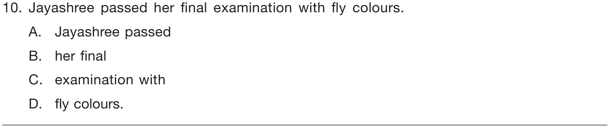
Jayashree passed her final examination with fly colours.
Jayashree passed
her final
examination with
fly colours.
The correct sentence would be, “Jayashree passed her final examination with flying colours”.
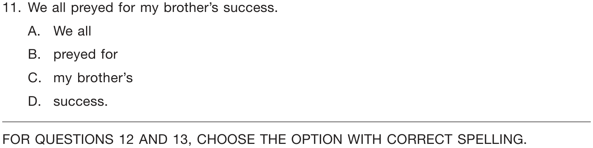
We all preyed for my brother’s success.
We all
preyed for
my brother’s
success.
FOR QUESTIONS 12 AND 13, CHOOSE THE OPTION WITH CORRECT SPELLING.
The correct sentence would be “We all prayed for my brother’s success.”
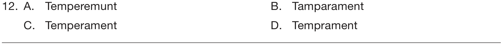
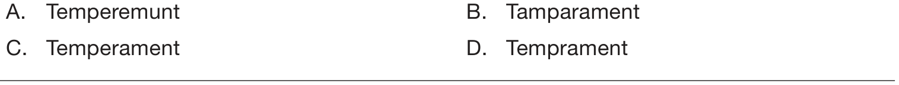
Option A
Option B
Option C
Option D
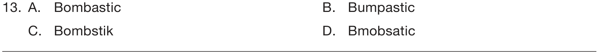
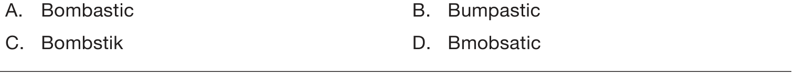
Option A
Option B
Option C
Option D
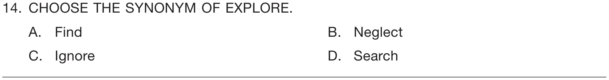
CHOOSE THE SYNONYM OF EXPLORE.
Find
Neglect
Ignore
Search
‘Search’ is the synonym of ‘Explore’. Both these words, ‘Search’ and ‘Explore’ mean, “to find out about something in detail”.

CHOOSE THE ANTONYM OF HAZARDOUS.
Secure
Banish
Small
Risky
‘Secure’ is the antonym of ‘Hazardous’. The word ‘secure’ means ‘safe’ and ‘hazardous’ means ‘risky’ or ‘dangerous’.
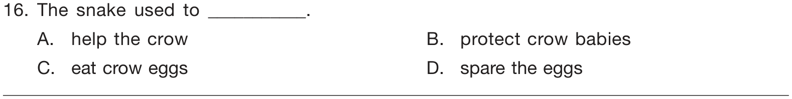
The snake used to ___________.
help the crow
protect crow babies
eat crow eggs
spare the eggs
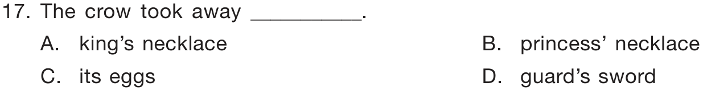
The crow took away ___________.
king’s necklace
princess’ necklace
its eggs
guard’s sword
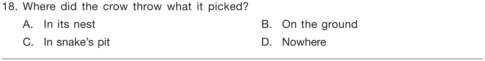
Where did the crow throw what it picked?
In its nest
On the ground
In snake’s pit
Nowhere
The crow picked up the princess’s necklace in her beak and flew off to her nest. When the guards found the crow, she dropped the necklace right into the snake’s pit.
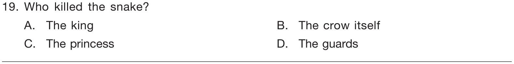
Who killed the snake?
The king
The crow itself
The princess
The guards
The guards saw the snake and killed it with big sticks.
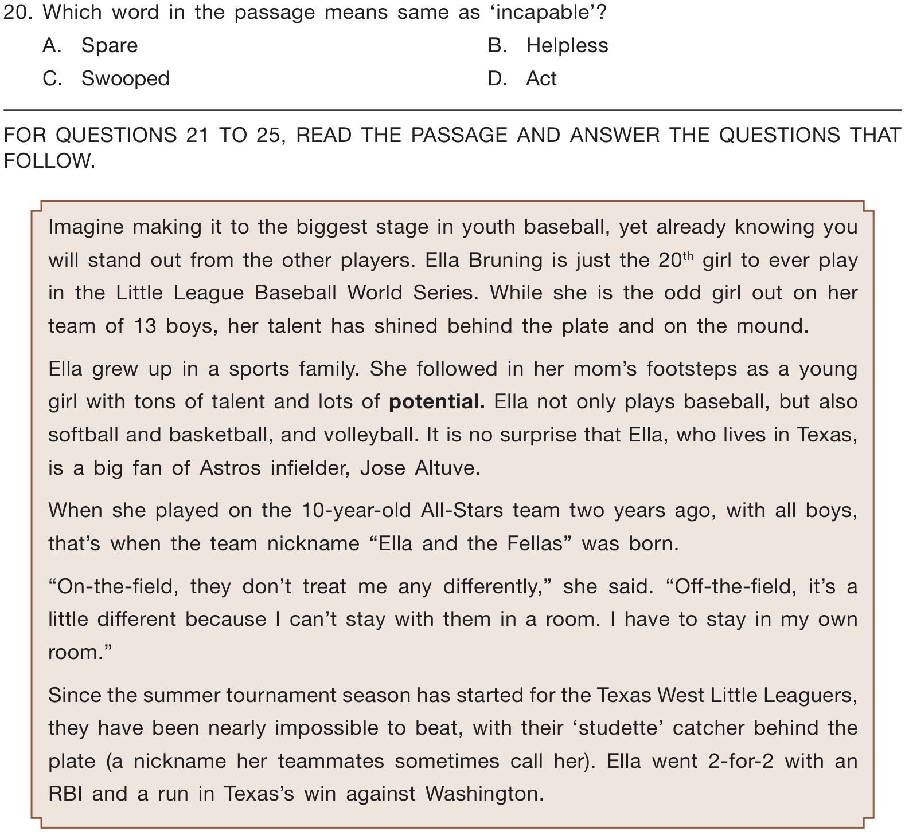
Which word in the passage means same as ‘incapable’?
Spare
Helpless
Swooped
FOR QUESTIONS 21 TO 25, READ THE PASSAGE AND ANSWER THE QUESTIONS THAT FOLLOW.
Imagine making it to the biggest stage in youth baseball, yet already knowing you will stand out from the other players. Ella Bruning is just the 20th girl to ever play in the Little League Baseball World Series. While she is the odd girl out on her team of 13 boys, her talent has shined behind the plate and on the mound.
Ella grew up in a sports family. She followed in her mom’s footsteps as a young girl with tons of talent and lots of potential. Ella not only plays baseball, but also softball and basketball, and volleyball. It is no surprise that Ella, who lives in Texas, is a big fan of Astros infielder, Jose Altuve.
When she played on the 10-year-old All-Stars team two years ago, with all boys, that’s when the team nickname “Ella and the Fellas” was born.
“On-the-field, they don’t treat me any differently,” she said. “Off-the-field, it’s a little different because I can’t stay with them in a room. I have to stay in my own room.”
Since the summer tournament season has started for the Texas West Little Leaguers, they have been nearly impossible to beat, with their ‘studette’ catcher behind the plate (a nickname her teammates sometimes call her). Ella went 2-for-2 with an RBI and a run in Texas’s win against Washington.
Act
Both these words ‘incapable’ and ‘helpless’ mean, “unable to do something”.
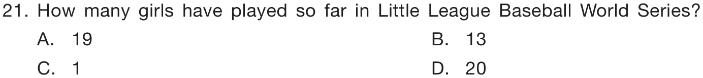
How many girls have played so far in Little League Baseball World Series?
19
13
1
20
20 girls have played so far in Little League Baseball World Series.
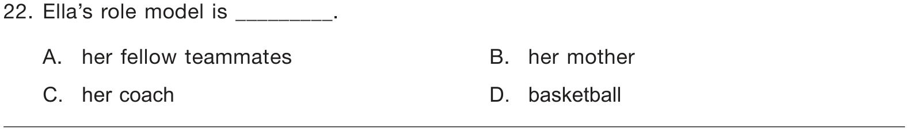
Ella’s role model is _________.
her fellow teammates
her mother
her coach
basketball
Ella’s role model is her mother. She followed in her mom’s footsteps as a young girl to play baseball.
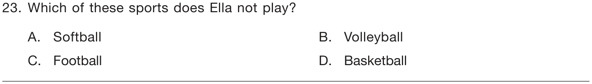
Which of these sports does Ella not play?
Softball
Volleyball
Football
Basketball
Except for Football, Ella plays baseball, softball basketball and volleyball.
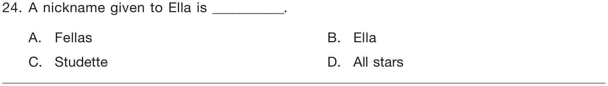
A nickname given to Ella is ___________.
Fellas
Ella
Studette
All stars
Ella’s teammates sometimes calls her ‘studette’.
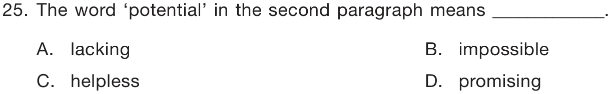
The word ‘potential’ in the second paragraph means _____________.
lacking
impossible
helpless
promising
Both the words ‘potential’ and ‘promising’ mean having or showing the ability to gain success in future.
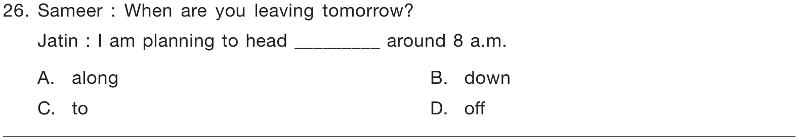
Sameer : When are you leaving tomorrow?
Jatin : I am planning to head _________ around 8 a.m.
along
down
to
off
‘Head off’ mean to start a journey or leave a place.
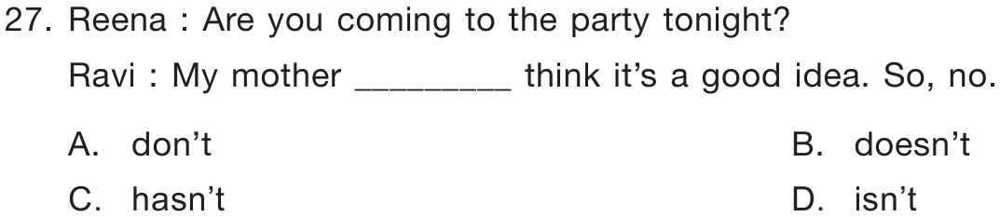
Reena : Are you coming to the party tonight?
Ravi : My mother _________ think it’s a good idea. So, no.
don’t
doesn’t
hasn’t
isn’t
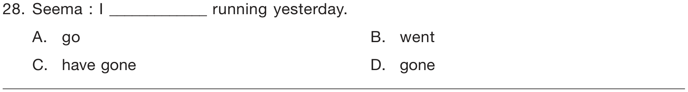
Seema : I _____________ running yesterday.
go
went
have gone
gone
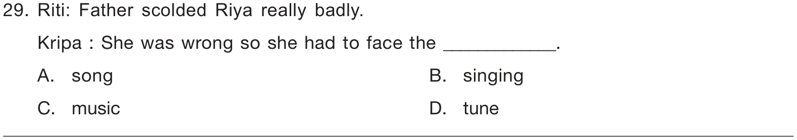
Riti: Father scolded Riya really badly.
Kripa : She was wrong so she had to face the _____________.
song
singing
music
tune
‘Face the music’ is an idiom which means to accept unpleasant consequences.
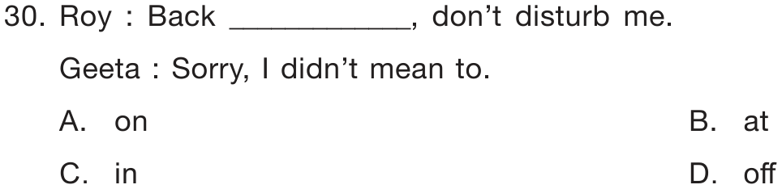
Roy : Back _____________, don’t disturb me.
Geeta : Sorry, I didn’t mean to.
on
at
in
off
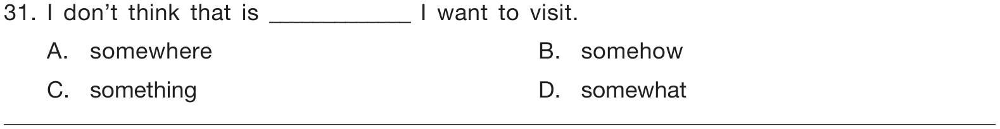
I don’t think that is _____________ I want to visit.
somewhere
somehow
something
somewhat
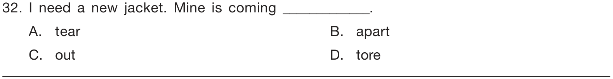
I need a new jacket. Mine is coming _____________.
tear
apart
out
tore
‘Coming apart’ means to tear into pieces.
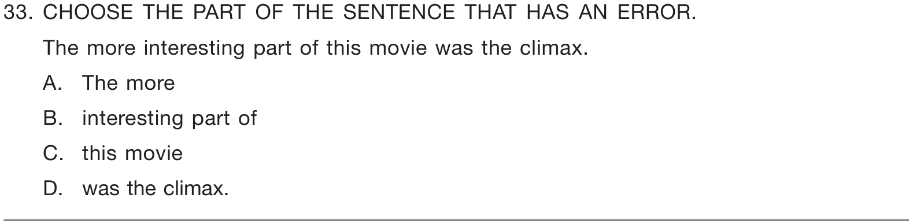
CHOOSE THE PART OF THE SENTENCE THAT HAS AN ERROR. The more interesting part of this movie was the climax.
The more
interesting part of
this movie
was the climax.
The correct sentence would be, “The most interesting part of this movie was the climax”.
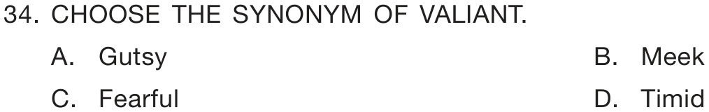
CHOOSE THE SYNONYM OF VALIANT.
Gutsy
Meek
Fearful
Timid
‘Gutsy’ is the synonym of ‘Valiant’. Both these words mean, having or showing courage and determination towards something.
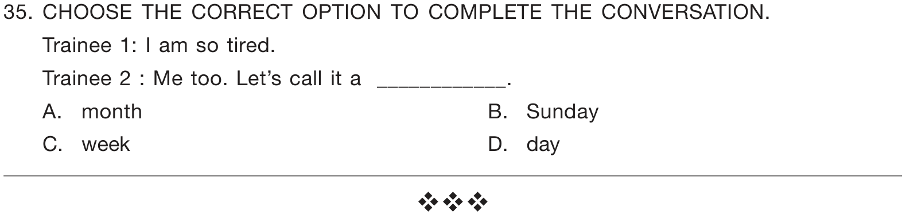
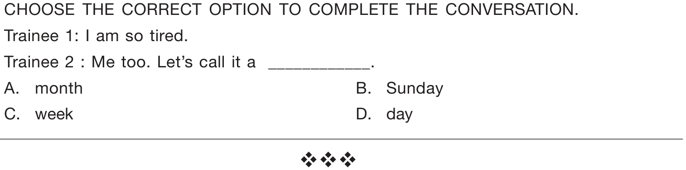
Option A
Option B
Option C
Option D
‘Call it a day’ is an idiom which means to stop doing something because of tiredness or any other reason.